Caption & Browse
FMSS · interactive in-app browser (IAB) prototype — standalone mock


Nike, Sponsored. Luxuriously soft and tailored for comfort and everyday wear, the Nike 24.7 Collection moves with you all day long. Combining breathable fabrics and a sleek fit, it’s perfect for all your activities.





Tap the caption or Shop now · drag the in-app browser
Tap the caption (“… more”) to open the in-app browser (IAB) as a half sheet; Shop now opens it full screen. Drag the sheet up to go full, down to return to half or dismiss. X or Escape closes.